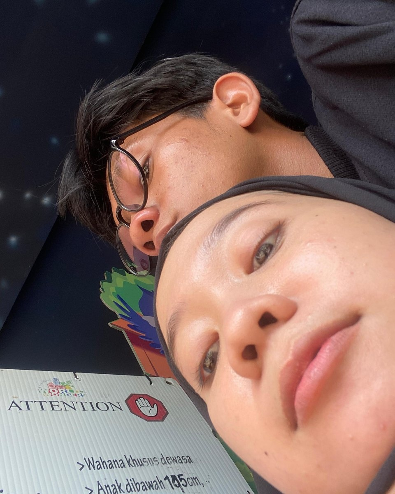
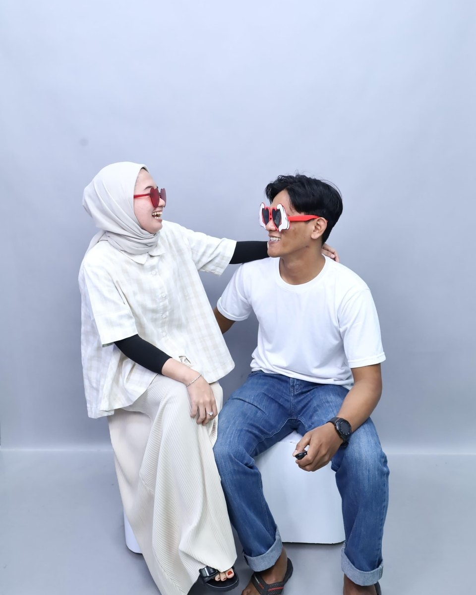
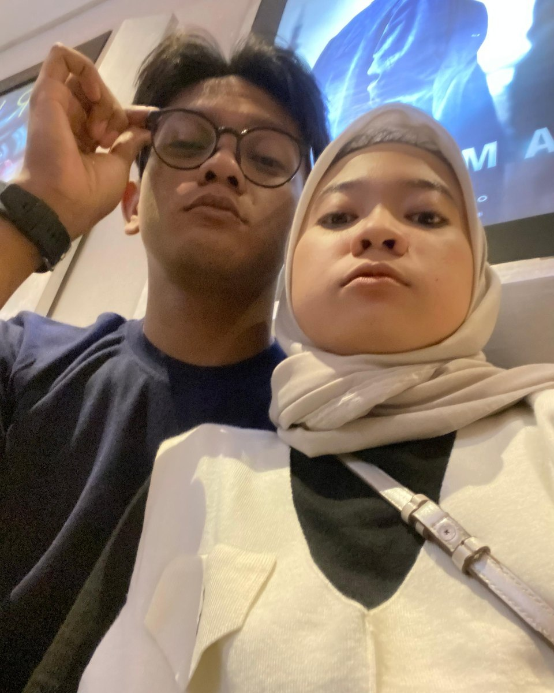
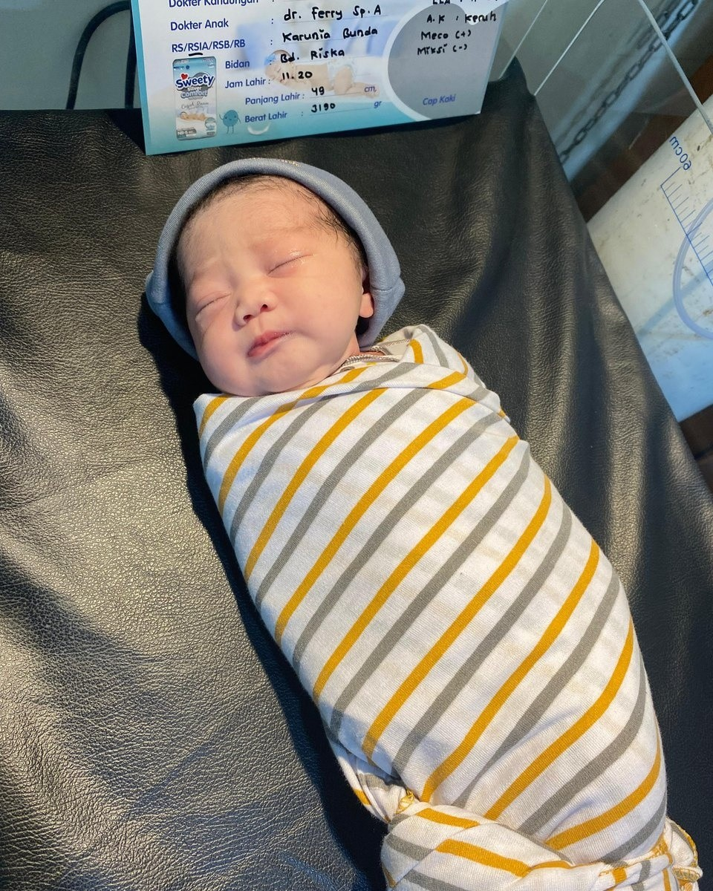
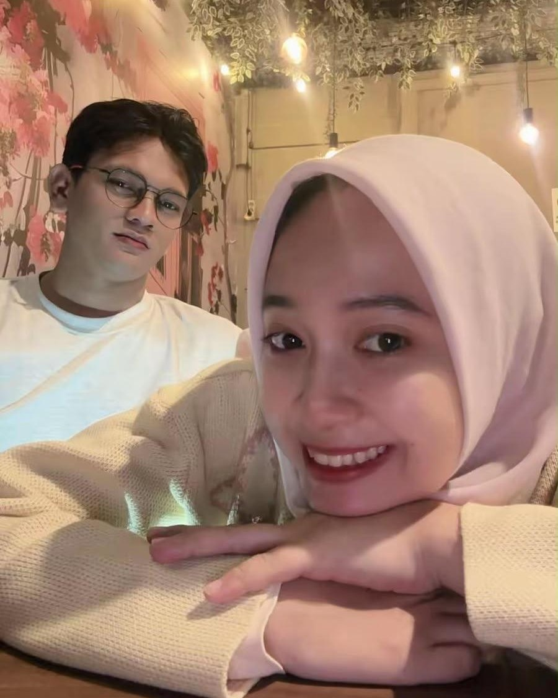
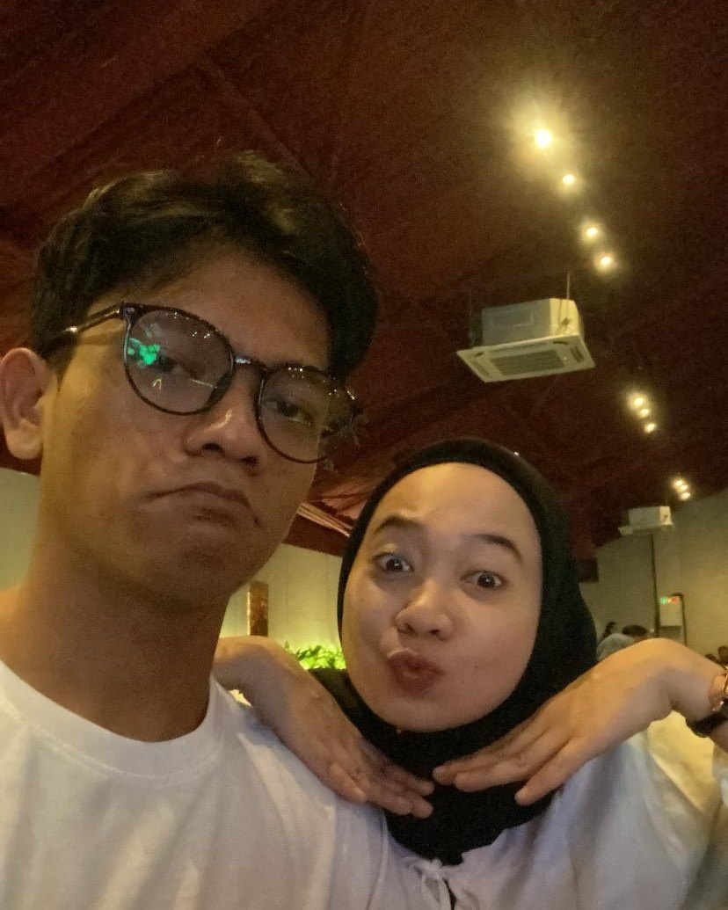

01 — sebuah awalBALIK KARTU ↗01 / 06♡
Bersamamu, hal-hal sederhana selalu terasa istimewa. Terima kasih sudah membuat hari-hariku lebih hangat.
Selalu, akuHARI ISTIMEWA UNTUKMU
Untuk perempuan yang selalu jadi rumahku
Terima kasih untuk segalanya...
Hari ini tentang kamu—tentang semua hal indah yang kamu bawa ke dalam hidupku.
Lihat kenangan kita↓POTONGAN KECIL CERITA KITA
Sentuh atau pilih sebuah foto untuk membaca pesan kecil dariku.

01 — sebuah awalBALIK KARTU ↗Bersamamu, hal-hal sederhana selalu terasa istimewa. Terima kasih sudah membuat hari-hariku lebih hangat.
Selalu, aku
02 — tawa kitaBALIK KARTU ↗Tawamu adalah salah satu suara favoritku. Semoga tahun ini memberimu banyak alasan untuk tertawa.
Selalu, aku
03 — hari biasaBALIK KARTU ↗Aku mencintai bukan hanya momen besar, tetapi juga hari-hari biasa yang kita jalani berdampingan.
Selalu, aku
04 — tempat pulangBALIK KARTU ↗Di dekatmu, aku selalu menemukan tempat untuk pulang. Terima kasih telah menjadi rumah yang penuh kasih.
Selalu, aku
05 — tumbuh bersamaBALIK KARTU ↗Terima kasih sudah terus berjalan bersamaku, saling belajar, dan tumbuh menjadi kita.
Selalu, aku
06 — masih banyak ceritaBALIK KARTU ↗Semoga perjalanan kita ke depan dipenuhi hal-hal baik. Aku tak sabar menulis lebih banyak cerita bersamamu.
Selalu, akuUNTUKMU, HARI INI DAN SETERUSNYA
Dengan seluruh cintaku, [Namamu]